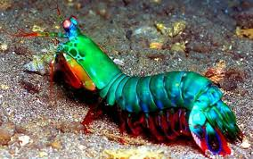

Fatos sobre o Stomatopoda
O Stomatopoda
Stomatopoda (ou estomatópode), chamados popularmente de tamarutacas
ou de lacraias-do-mar no Brasil, é uma ordem de crustáceos marinhos da
subclasse Hoplocarida, que agrupa cerca de 400 espécies, caracterizadas
principalmente pela morfologia da segunda pata torácica, que é modificada
em apêndice subquelado, lembrando uma pata de louva-a-deus.
Os estomatópodes são predadores ativos que caçam presas com o auxílio
de um sentido de visão muito apurado e capaz de interpretar polarização
no espectro ultravioleta e infravermelho). Apresentam uma grande variação
de tamanho, que pode ir de poucos milímetros até aproximadamente 40 cm nas
espécies maiores. Eles vivem em fundo consolidado, lodoso ou ainda arenoso,
onde cavam seus buracos ou aproveitam-se dos orifícios deixados por outros
animais para neles se instalar. São animais exclusivamente carnívoros,
alimentando-se de camarões, caranguejos, moluscos, peixes e até mesmo outros
da mesma ordem.
| Reino | Filo | Subfilo | Classe | Subclasse | Ordem |
|---|---|---|---|---|---|
| Animalia | Anthropoda | Crustacea | Malacostraca | Hoplocarida | Stomatopoda |
Mais coisas interessantes!

As maiores esmagadoras, tais como exemplares de Odontodactylus scyllarus,
são capazes de desferir um dos mais rápidos e violentos golpes do reino animal,
um soco que pode apresentar a velocidade de um tiro calibre .22 (equivalente
a 720km/h) e uma força de impacto de 60 kg/cm².[3] Essa força esmagadora é a
responsável pelo seu título de "lagosta-boxeadora" e é capaz de facilmente quebrar
a carapaça de um caranguejo, as conchas duras e calcificadas de gastrópodes ou
até mesmo quebrar o vidro reforçado de um aquário.
Também conhecidas como esquilas ou lagosta-boxeadora, espalhadas pelas
costas dos mares tropicais e subtropicais. Além das patas, elas apresentam
uma silhueta característica, devido ao grande comprimento aparentemente de
seu abdómen. Os ovos ficam ligados por uma massa gelatinosa que a mãe carrega
contra o ventre até que eclodem, limpando-os sem parar.